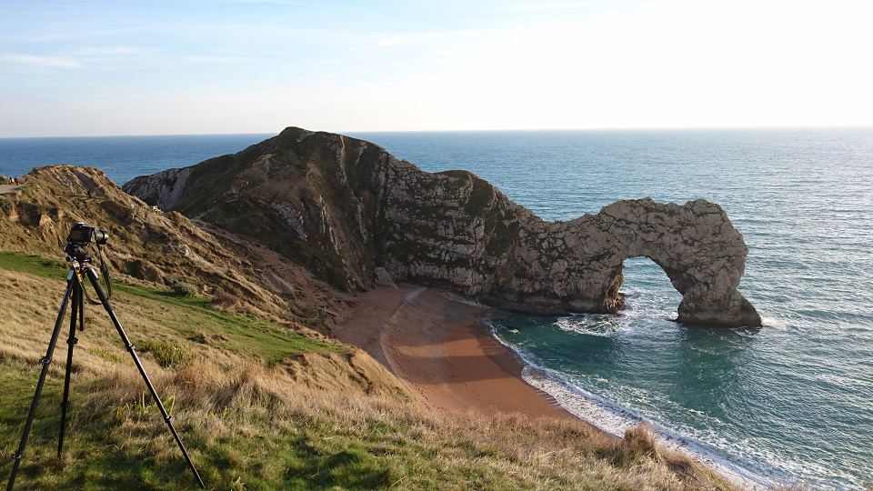

The Avalanches - If I Was a Folkstar
For this self-led brief I decided to make a music video for the Avalanches. I wanted to visualise the concept of their new album, showing a journey from a city to the beach. I took inspiration from various psychedelic music videos and video art, using analogue filming techniques to achieve a retro, psychedelic style. This ended up being one my favourite briefs as I had free reign to film what I wanted; I got to experiment and push myself like never before, and I am very happy with the outcome. You can find out more about the process behind this video on my blog.
